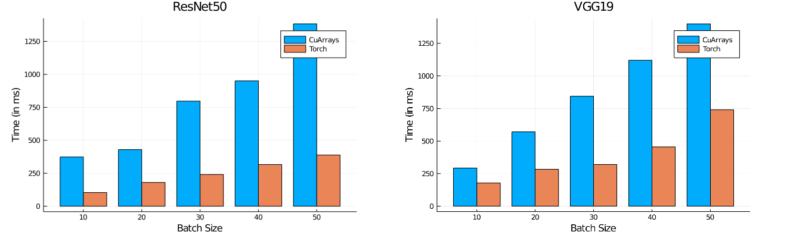
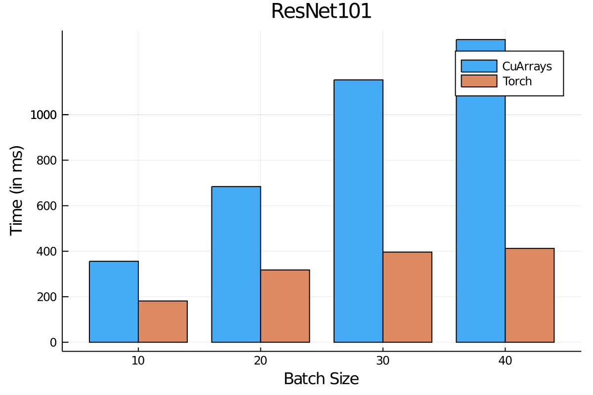

Accelerating Flux.jl with PyTorch kernels
Julia and Flux provide a flexible differentiable programming system. Flux does not trade flexibility and abstraction for performance, and in fact strives to achieve both in the same package. For example, Flux is able to target multiple hardware accelerators such as GPUs and TPUs. As a result, it is one of the pillars of Julia's deep learning ecosystem, with almost 40 packages leveraging it.
Here, we introduce Torch.jl, a package that wraps optimised kernels from PyTorch. Even though Julia's GPU compiler is already pretty good for general use and under heavy development, we provide Torch.jl to leverage well-debugged high performance kernels that have been built by the PyTorch community, much in the same way we use BLAS and LAPACK for Linear Algebra.
For popular object detection models - ResNet50, ResNet101 and VGG19 - we compare inference times for Flux using Torch.jl with our native tooling, and find Flux+Torch to be 2-3x faster. On larger batch sizes, the difference is much higher, since Julia's GPU stack needs further development in the area of memory management and GC.
 
All runs are with a Tesla K40 (12 GB), julia v1.4.2, Intel(R) Core(TM) i7-4790 CPU @ 3.60GHz and 32 GB of DDR3 Memory.
This project achieves two things. It brings state of the art performance to Julia users who need it today with no fuss, while simulatneously providing benchmarks to identify areas of improvement in the Julia GPU compiler stack, and track them.
Usage
Adding Torch.jl is easy. It assumes the presence of a CUDA enabled GPU on the device it is being added to, and assumes a linux system.
Moving models over to PyTorch kernels; introducing torch
Users of Flux are familiar with calling the gpu(model) API to accelerate their models with GPUs. The API for Torch.jl is just as simple - torch(model).
julia> using Metalhead
julia> resnet = ResNet()
julia> torch_resnet = resnet |> torchOf course this is not just limited to ResNet. Many architectures would benefit from this - such as VGG, DenseNet, Inception etc. Check out Metalhead.jl for some common computer vision models. It also helps improve performance in models such as YOLO via ObjectDetector.jl. In addition, large hard to train models like RCNNs also benefit from these kernels.
Installation
# Type `]` to enter Pkg mode in the Julia REPL.
pkg> add Torch
[...] # Note that this downloads the Torch artifact, which is quite large
julia> using TorchSimple, intuitive API
Our APIs make the PyTorch Tensors mimic Julia arrays closely, in order to provide a Julian experience to Flux users. Torch.jl provides the Tensor type which closely follows the semantics of a regular Julia array, albeit while being managed by PyTorch. One can create a tensor with an API similar to rand or zeros.
julia> z = Tensor(3,3)
3×3 Tensor{Float32,2} :
0.0 0.0 0.0
0.0 0.0 0.0
0.0 0.0 0.0Controlling the device the tensor is loaded on (the default being on CPU) is done via the dev keyword, available in most functions.
julia> z = Tensor(3,3, dev = 0)
3×3 Tensor{Float32,2} :
0.0 0.0 0.0
0.0 0.0 0.0
0.0 0.0 0.0Note that setting dev to -1 implies the CPU, and [0,...] represents the ID of the GPU we intend to load the tensor on. The default GPU is assumed to be 0. Torch.jl also defines the torch function which behaves like the gpu function already in Flux, moving over structs to Torch instead of CUDA.jl.
julia> using Flux, Metalhead, Torch
julia> using Torch: torch
julia> resnet = ResNet() # from Metalhead
ResNet()
julia> tresnet = resnet |> torch
ResNet()We can verify that that we have moved the model parameters to Torch.jl by checking out params.
julia> typeof.(Flux.params(tresnet))
212-element Array{DataType,1}:
Tensor{Float32,4}
Tensor{Float32,1}
[...]It is also possible to move regular Julia arrays back and forth from Torch.jl using the tensor helper function.
julia> r = rand(Float32, 3,3)
3×3 Array{Float32,2}:
0.435017 0.287086 0.105608
0.636305 0.398222 0.0682819
0.74551 0.944293 0.387852
julia> tr = tensor(r, dev = 0) # 0 => GPU:0
3×3 Tensor {Float32,2}:
0.435017 0.287086 0.105608
0.636305 0.398222 0.0682819
0.74551 0.944293 0.387852
julia> collect(tr)
3×3 Array{Float32,2}:
0.435017 0.287086 0.105608
0.636305 0.398222 0.0682819
0.74551 0.944293 0.387852Taking gradients
We can use the Zygote.jl reverse mode AD to differentiate the models using Torch.jl tensors, just like we would with regular Julia Arrays.
julia> ip = rand(Float32, 224, 224, 3, 1);
julia> tip = tensor(ip, dev = 0);
julia> gs = gradient(Flux.params(tresnet)) do
sum(tresnet(tip))
end;We can now use this gradient to train our models.
Additional Remarks
In Torch.jl, our aim is also to change as little user code as possible, making it easy to get started with. We invite the community to contribute more kernels and provide features from PyTorch that Julia users might be interested in. For feature requests and issues that you might run into with Torch.jl, please open issues on our GitHub issue tracker. Contributions via pull requests are highly encouraged!
We look forward to seeing folks try it out and let us know on discourse about their experiences. Cheers!